开心果 Need Car · 2023-02-22T09:45:00+08:00 · 微信原文
对于开发人员，Lauterbach调试器并不陌生，如果你所参与的项目，已经有配置好的工程和*.cmm脚本，调试多核系统时，会方便很多。如果是新的工程，没有进行多核配置，可能需要费点脑筋。本文，就TRACE32如何配置多核调试，做一个简单介绍。
提示：本文基于TC375TP讨论
1、加载默认Flash刷写*.cmm脚本
安装TRACE32以后，在安装路径~~\demo\tricore\flash下（~~表示本地安装路径），存在不同芯片架构、不同型号的Flash刷写脚本（*.cmm），如下所示：
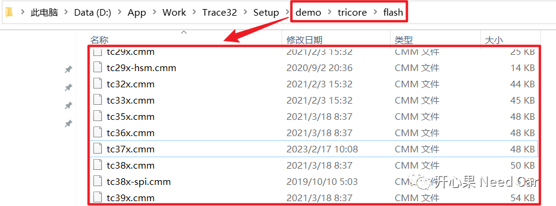
提示：本文使用tricore架构芯片
（一）刷写Flash（更新程序）
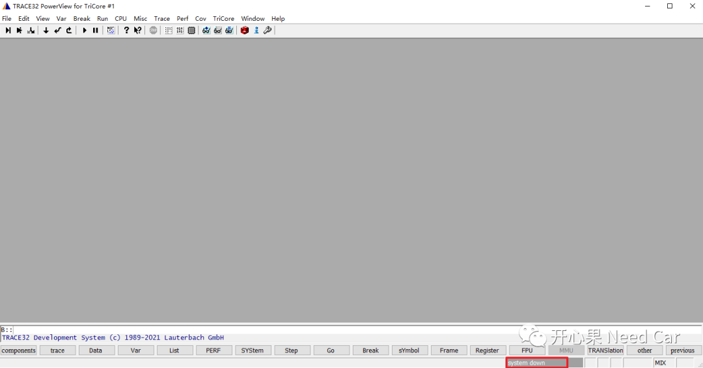
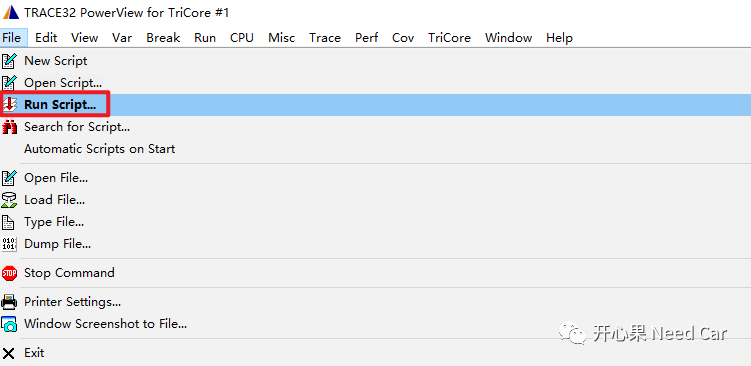
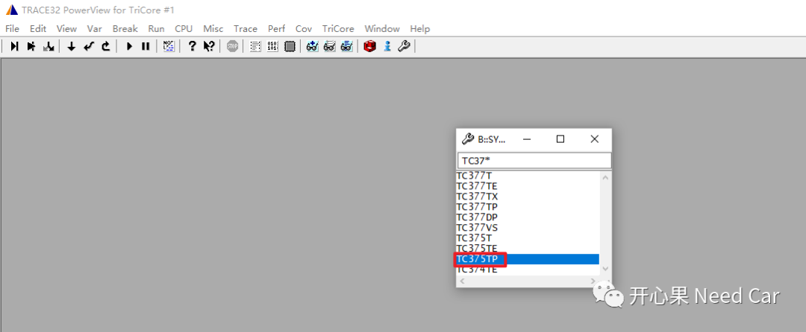
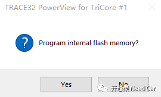
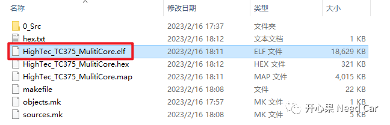
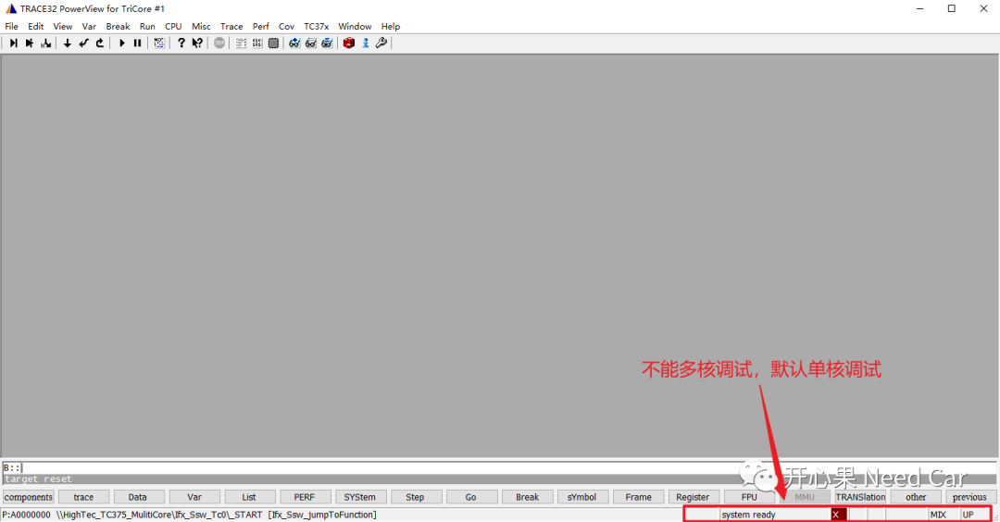
2、修改默认Flash编程脚本，启动多核调试
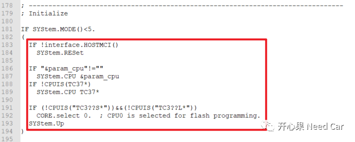
（一）启用多核调试配置
在TC37x.cmm中，添加启动多核调试配置的脚本语句，如下所示：
SYStem.CPU TC375TPCORE.ASSIGN 1. 2. 3. // assign cores to the SMP system
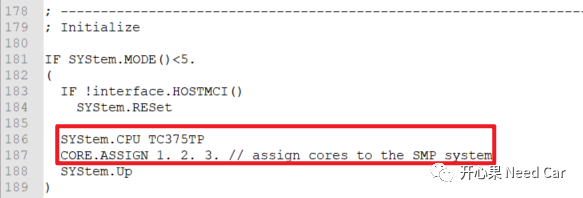
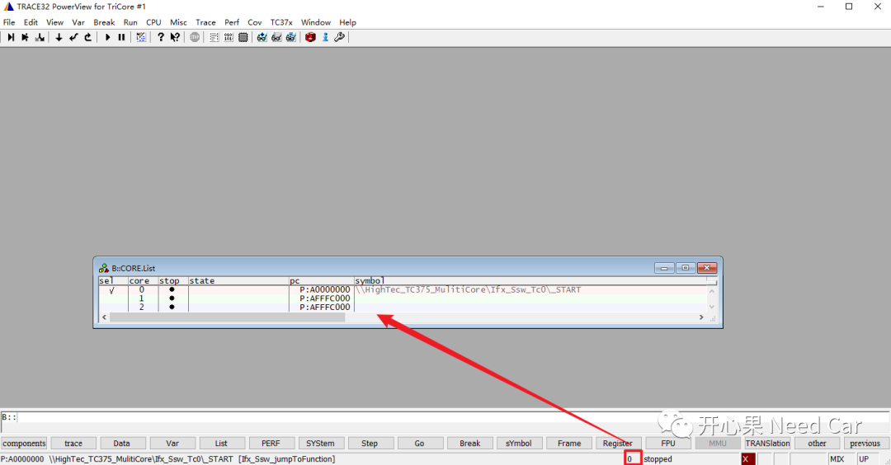
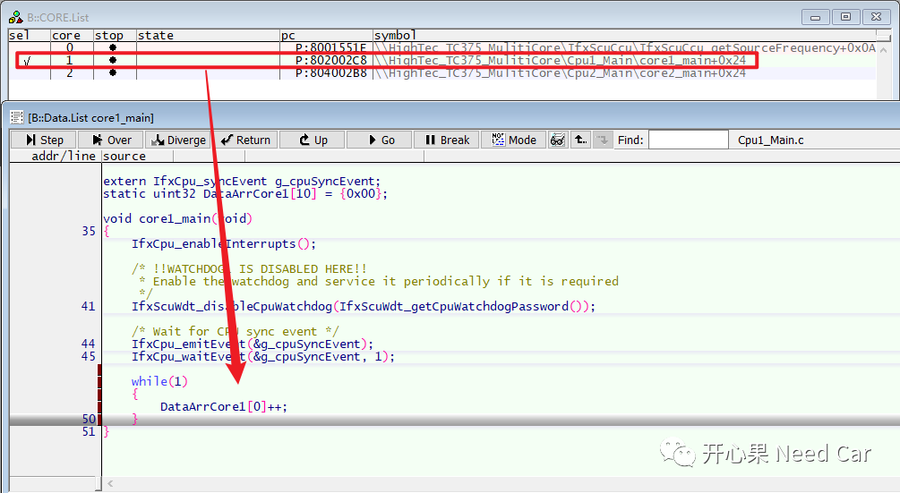
3、加载指令路径下的*.elf文件
一般，在本地CP中，编译器生成的*.elf文件路径固定，所以，加载固定路径下的*.elf文件会方便很多。
（一）修改TC37x.cmm脚本
修改TC37x.cmm脚本的具体位置如下所示，本文使其可以直接打开"D:\WorkSpace\HighTec\*"路径，如下所示：
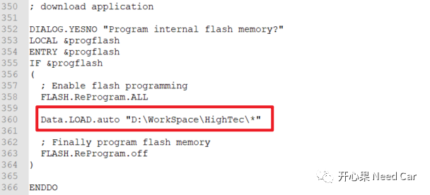
保存TC37x.cmm脚本，重启TRACE32，再次加载TC37x.cmm脚本后，提示加载*.elf文件的路径如下所示：
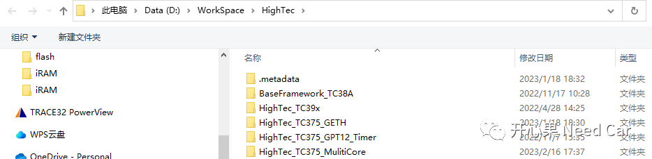
也可以使用Data.LOAD.Elf "*.elf文件的本地路径"命令直接加载绝对路径下的*.elf文件，示例如下：
Data.LOAD.Elf "D:\WorkSpace\HighTec\HighTec_TC375_MulitiCore\iRAM\HighTec_TC375_MulitiCore.elf"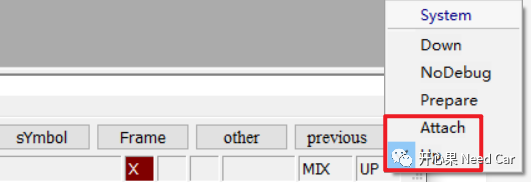
往期精彩回顾
Autosar EcuM：APP由RUN到POST_RUN浅析